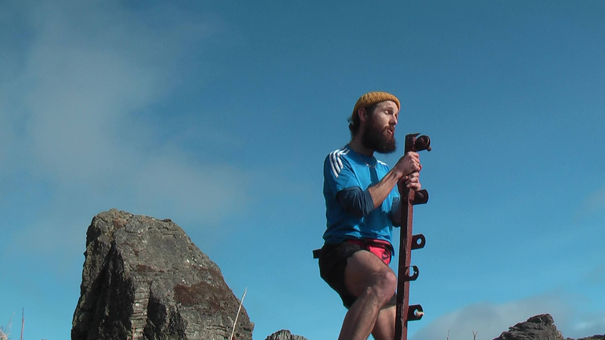

I
wrote this album as my heart bounced along the grassy tufts of this world— my body and mind inflating with it's pleasings,
like the tide,
and like the seasons.
Melodies coaxed out of me as i thread myself between old trees and new companions, floral and faunal.
Everyone i've shared time with— and everything i've shared space with seeps into me and fills my being.
This is my attempt to express the interplaying joy and sorrow that defines my experience— in the surest terms that i am able.
